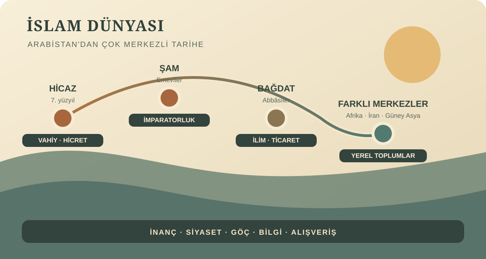

İslam dünyası tek bir ülke, hanedan veya değişmez kültür değildi. 7. yüzyılda Arabistan'ın Hicaz bölgesinde doğan İslam inancı, kısa sürede yeni bir topluluğun ve devlet düzeninin merkezine yerleşti. Sonraki yüzyıllarda farklı yönetimler, diller ve yerel geleneklerle karşılaştı; Afrika'dan Orta Asya'ya, Akdeniz'den Güney Asya'ya uzanan çok merkezli toplumların parçası oldu.
İslam nerede ve nasıl ortaya çıktı?
İslam inancında tevhid ve peygamberlik insanlık tarihinin başlangıcına uzanır. Tarihsel inceleme ise 7. yüzyılın başlarında, Arap Yarımadası'nın batısındaki Hicaz'da görünür hâle gelen yeni dinî topluluğa ve onun kurumlarına odaklanır. Müslüman geleneğine göre Hz. Muhammed ilk vahyi yaklaşık 610'da Mekke'de aldı. Mekke, Kâbe çevresindeki hac ve ticaret hareketliliğiyle farklı toplulukların karşılaştığı bir merkezdi; yeni mesajın kabulü de bu şehrin toplumsal ve siyasi ilişkileri içinde gelişti.[1][2]
622'de Muhammed ve takipçilerinin Mekke'den Yesrib'e—sonradan Medine adıyla anılacak şehre—hicret etmesi, topluluğun tarihinde belirleyici bir dönüm noktası oldu. Hicret, İslam takviminin başlangıcı kabul edilir. Medine'de inanç topluluğu ibadet ve dayanışmanın yanı sıra anlaşmalar, savunma ve yönetim meseleleriyle de uğraşan bir siyasi topluluğa dönüştü. Bu, dinî ve siyasi hayatın o dönemde birbirinden bugünkü anlamda kesin çizgilerle ayrılmadığını gösterir; yine de sonraki Müslüman devletlerin tamamını aynı kurumsal model saymak doğru olmaz.[1]
İslam'ın kökenleri üzerine tarihçiler, erken dönem anlatılarının hangi tarihte ve hangi koşullarda yazıldığını da tartışır. Robert Hoyland, Hz. Muhammed'in hayatını incelerken Müslüman kaynaklarının yanı sıra geç antik dönemin diğer yazılı tanıklıklarını ve kaynakların değerlendirilme yöntemlerini dikkate alır. Bu yaklaşım, inanç geleneğine saygılı bir anlatıyla tarihçinin kanıtları nasıl tarttığını birbirinden ayırmaya yardımcı olur.[3]
Peygamber'in ardından: topluluk, halifelik ve ayrışmalar
Muhammed'in 632'deki ölümünün ardından topluluğun liderliği ve yönetimin nasıl sürdürüleceği konusunda yeni bir dönem başladı. Sünni tarih geleneğinde ilk dört halife—Ebû Bekir, Ömer, Osman ve Ali—632–661 arasındaki “Hulefâ-yi Râşidîn” dönemiyle anılır. Şiî gelenek ise Hz. Ali'nin konumunu ve meşru liderliğin aktarımını farklı yorumlar. Sünni ve Şiî kimlikleri bir anda tamamlanmış iki blok gibi değil, siyasi mücadeleler, dinî yorumlar ve kurumların zaman içinde şekillendirdiği gelenekler olarak düşünmek gerekir.[4]
Bu dönemde Arap orduları Suriye, Filistin, Mısır, Irak ve İran'daki eski Bizans ve Sasani topraklarına yayıldı. Fetihler büyük bir siyasi harita değişikliğine yol açtı; ancak yönetimin değişmesi o bölgelerde yaşayan herkesin hemen Müslüman olduğu anlamına gelmiyordu. Hristiyan, Yahudi, Zerdüşt ve başka topluluklar uzun süre varlıklarını sürdürdü. İnsanların Müslümanlaşması bölgeye, döneme, toplumsal ilişkilere ve devlet politikalarına göre farklı hızlarda gerçekleşti.[5]
Emevîler: Şam'dan Endülüs'e uzanan iktidar
661'de Muâviye'nin halife olmasıyla yönetim merkezi Suriye'deki Şam'a taşındı ve Emevî hanedanı kuruldu. Emevîler döneminde fetihler batıda Kuzey Afrika ve İber Yarımadası'na, doğuda Orta Asya ve Sind'e kadar ilerledi. Bu genişleme, tek tip bir idarenin her yerde aynı güçle işlediği anlamına gelmiyordu: yerel yöneticiler, vergi düzenleri ve eski idari gelenekler yeni siyasi yapıyla birlikte varlığını sürdürdü.[6]
7. yüzyılın sonlarından itibaren Arapçanın yönetimde daha geniş kullanılması ve para sistemindeki değişiklikler, yeni iktidarın görünürlüğünü artırdı. Fakat “Arap yönetimi” ile “Müslüman toplum” aynı şey değildi. Emevî yönetimi sırasında Müslüman olan Arap olmayan toplulukların statüsü ve vergi yükümlülükleri tartışma ve gerilim konusuydu. Bu ve başka siyasi hoşnutsuzluklar, 750'de Abbâsîlerin iktidara gelişine zemin hazırladı; değişim yalnızca bir hanedanın ötekini yenmesi değildi.[6][7]
Abbâsîler: Bağdat ve bilgi dolaşımı
Abbâsîler 750'de iktidarı aldı; 762'de halife Mansûr, Dicle kıyısında Bağdat'ı yeni başkent olarak kurdu. Şehir kısa sürede saray, yönetim, ticaret ve öğrenim çevrelerinin kesiştiği büyük bir merkez hâline geldi. Abbâsî döneminde Arapça, Farsça ve başka dillerdeki bilgi gelenekleri karşılaştı; matematik, tıp, astronomi ve felsefe alanlarındaki eserler çevrildi, yorumlandı ve yeni çalışmalarla geliştirildi. Bu birikim yalnızca Bağdat'ta ya da yalnızca Müslüman bilginlerce üretilmedi; farklı dinlerden çevirmenler ve uzmanlar da bu süreçte yer aldı.[8]
“İslam'ın altın çağı” sözü bu entelektüel üretimin önemini anlatmak için kullanılsa da, tek bir kesintisiz refah dönemini veya bilimin yalnızca bir merkezde geliştiğini düşündürebilir. Bağdat'ın yanında Kahire, Kurtuba, Buhara ve başka şehirler farklı zamanlarda önemli kültür merkezleri oldu. Abbâsî halifelerinin siyasi gücü de yüzyıllar içinde değişti; yerel hanedanlar ve bölgesel yönetimler güç kazansa bile İslam'a bağlı topluluklar ve ortak kültürel bağlar ortadan kalkmadı. 1258'de Moğol ordularının Bağdat'ı alması, Bağdat merkezli Abbâsî hilâfetini sona erdirdi; bu kırılmanın daha geniş sonuçlarını Moğol İmparatorluğu yazımızda ele alıyoruz.[8][9]
İslam farklı coğrafyalara nasıl yayıldı?
İslam'ın yayılışını yalnızca orduların hareketiyle açıklamak eksik kalır. Fetihler bazı bölgelerde yeni Müslüman yönetimler kurdu; fakat toplumların dinî dönüşümü çoğu yerde daha uzun zamana yayıldı. Tüccarlar, âlimler, sûfî çevreler, göçmenler ve aile bağları da inançların ve pratiklerin taşınmasında rol oynadı. Bu yolların etkisi her yerde aynı değildi; örneğin Batı Afrika ve Güneydoğu Asya'da ticaret ve yerel siyasi ilişkiler, İber Yarımadası'ndaki askerî genişlemeden farklı bir tarih yarattı.[9]
İslam'ın yayıldığı yerlerde Arapça önemli bir din, eğitim ve yönetim dili hâline geldi; ancak herkesin günlük dili olmadı. Farsça edebiyat ve yönetim kültürü, Türk dilleri, Berberice, Svahili, Urduca ve Malayca gibi diller farklı Müslüman toplumlarda gelişti. Yerel gelenekler yeni dinî pratiklerle karşılaştı; bu karşılaşmalar tek yönlü bir “Araplaşma” süreci değildi. Bölgesel farklar, ortak bir inanç dünyasının içinde çoğul kültürlerin oluşmasını sağladı.[9]
Bir imparatorluk değil, değişen toplumlar ağı
Abbâsî halifeliğinin etkisinin zayıfladığı dönemlerde bile İslam dünyası siyasi olarak boşlukta kalmadı. Endülüs'teki Emevîler, Mısır merkezli Fâtımîler, İran ve Irak'taki hanedanlar, Kuzey Afrika'daki yönetimler, Selçuklular ve daha sonra Memlükler farklı dönemlerde güç kazandı. Bu devletler bazen rekabet etti, bazen ittifak kurdu; aynı zamanda hac, ticaret, eğitim ve hukuk ağları toplumlar arasında bağ kurmayı sürdürdü. Selçuklu, Eyyûbî ve Memlük yönetimlerinin Haçlı seferleriyle ilişkileri de bu değişken siyasi tablonun parçasıydı; ayrıntılar için Haçlı Seferleri yazımıza, Memlüklerin kendi tarihsel seyri için de Memlük Sultanlığı yazımıza bakabilirsiniz. “İslam dünyası” bu nedenle bir devletin sınırları değil, ortaklıklar ve ayrışmalarla değişen tarihsel bir ilişkiler alanıdır.[9]
15. ve 16. yüzyıllarda Osmanlı, Safevî ve Babür devletlerinin yükselişi, Müslüman toplumların farklı siyasi merkezlerde yeniden örgütlenmesinin örnekleridir. Bunların her biri başka dilleri, yönetim geleneklerini ve toplumsal bileşimleri içinde barındırdı. Sonraki yüzyıllarda sömürgecilik, reform hareketleri ve modern ulus devletlerin ortaya çıkışı yeni dönüşümler yarattı; bugün de Müslümanlar tek bir siyasi yapı altında değil, çok sayıda ülkede ve diasporada yaşar. Bu uzun geçmişi anlamak, İslam tarihini tek bir hanedanın yükseliş ve çöküşüne indirgememeyi gerektirir.[9]
Kısa zaman çizelgesi
Kaynaklar ve ileri okuma
- Azmi Özcan, “İslâm: VI. Doğuşu ve Yayılışı,” TDV İslâm Ansiklopedisi, İslâm maddesi. Akademik başvuru kaynağı.
- Fred M. Donner, Muhammad and the Believers: At the Origins of Islam, Harvard University Press, 2010. Yayınevi ve kitap kaydı.
- Robert G. Hoyland, “Writing the Biography of the Prophet Muhammad: Problems and Solutions,” History Compass, 5, no. 2 (2007), s. 581–602. Erken İslam tarihinin kaynakları ve yöntemlerini değerlendiren hakemli makale. DOI ve yayın kaydı.
- “Hulefâ-yi Râşidîn,” TDV İslâm Ansiklopedisi, madde kaydı.
- Robert G. Hoyland, In God’s Path: The Arab Conquests and the Creation of an Islamic Empire, Oxford University Press, 2015. Yayınevi ve kitap kaydı.
- İsmail Yiğit, “Emevîler,” TDV İslâm Ansiklopedisi, madde kaydı.
- Jonathan P. Berkey, The Formation of Islam: Religion and Society in the Near East, 600–1800, Cambridge University Press, 2003. Kitap ve katalog kaydı.
- Hakkı Dursun Yıldız, “Abbâsîler,” TDV İslâm Ansiklopedisi, madde kaydı.
- Ira M. Lapidus, A History of Islamic Societies, 3. bs., Cambridge University Press, 2014. Farklı bölge ve dönemlerdeki Müslüman toplumlarını karşılaştırmalı biçimde ele alır. Kitap ve katalog kaydı.
- Özgün şematik illüstrasyon: Valexirion. Tarihsel bir harita veya belirli bir dönemin siyasi sınırları olarak kullanılmamalıdır.
Bu yazı, İslam tarihinin erken döneminden erken modern çağdaki büyük siyasi merkezlere uzanan genel bir çerçevedir. İnanç anlatısı ile tarihsel kaynakların incelenmesini ayırır; fetihleri toplumsal dönüşümle, halifelikleri de bütün Müslüman toplumların tarihiyle özdeşleştirmez. Kaynaklara 13 Kasım 2026 tarihinde erişilmiştir.